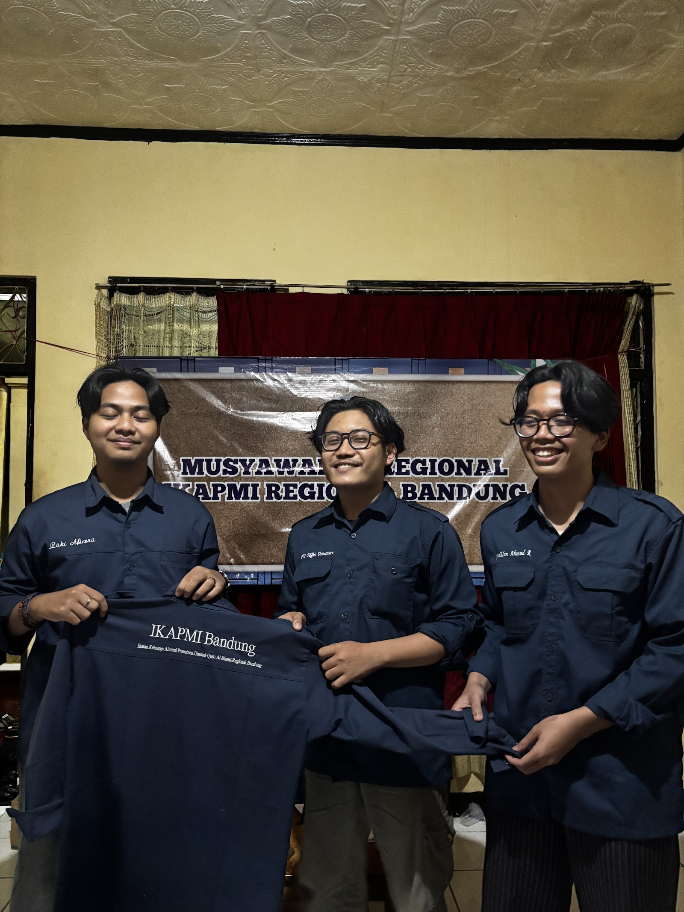

14 Januari 2025
Organisasi
MUREG 2025: Suksesi Kepemimpinan dan Penetapan Arah Baru IKAPMI Bandung
Forum musyawarah regional tertinggi resmi menetapkan nakhoda baru serta menyepakati penguatan basis database digital anggota.